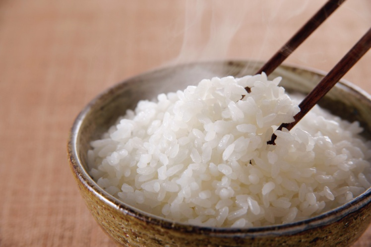
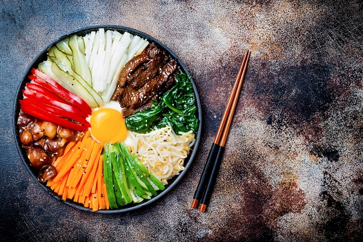

Bibimbap

Se puede decir que el bibimbap es la comida representativa de Corea. Es nutritiva, a base de verduras, y es de consumo habitiual entre coreanos.
Ingredientes:
- Arroz: 2 tazas
- Carne picada: 100 gr.
- Espinaca: 1 unidad
- Zanahoria: 1 unidad
- Hongo (puede ser champiñones o cualquier otro hongo fresco o seco): 500 gr
- Brote de soja: 500 gr
- Zapallito verde: 2 unidades
- Cebolla: 1 unidad
- Cebolla de verdeo: 1 unidad
- Ajo: 3 dientes
- Huevo: 3 unidades:
- Gochujang (pasta de ají rojo picante: 4 cucharas soperas
- Aceite de Sésamo: 1 cuchara sopera
- Glucosa: 1 cuchara sopera
- Azúcar: una pizca
Pasos

El Arroz
- Es importante cocinar un rico arroz. Lavar el arroz en agua (lavar con agua fría y enjuagar unas 5 veces es suficiente).
- Colocar el arroz en una olla y medir el agua (al presionar el arroz con la palma, el agua debe llegar hasta la mitad del dorso de la mano).
- Hervir el arroz a fuego fuerte. Una vez que empieza a subir la espuma, bajar el fuego al mínimo. Cuando se evapore el agua, el arroz ya estará listo. Dejar reposar.

Los toppings
- La espinaca: blanquear la espinaca y condimentar con una pizca de sal, unas gotas de aceite de sésamo, una pizca de ajo picado y cebolla de verdeo picada.
- La cebolla y la zanahoría: cortar en finas julianas y saltear en sartén con una pizca de sal.
- El brote de soja: saltear en la sartén y condimentar con una pizca de sal, unas gotas de aceite de sésamo y una pizca de ajo picado.
- Los hongos: filetear y saltear en la sartén con una pizca de sal.
- Los zapallitos verdes: cortar en juliana y macerar en sal. Luego, quitar el agua que pierde la verdura y saltear en la sartén.
- La carne picada: saltear en la sartén con un chorrito de salsa de soja, pizca de azúcar, pizca de ajo picado y unas gotas de aceite de sésamo

La salsa
- Mezclar el gochujan, la glucosa, ajo picado y un chorrito de aceite de sésamo.
- Servir en un salsero para que cada comensal lo utilice a su gusto.